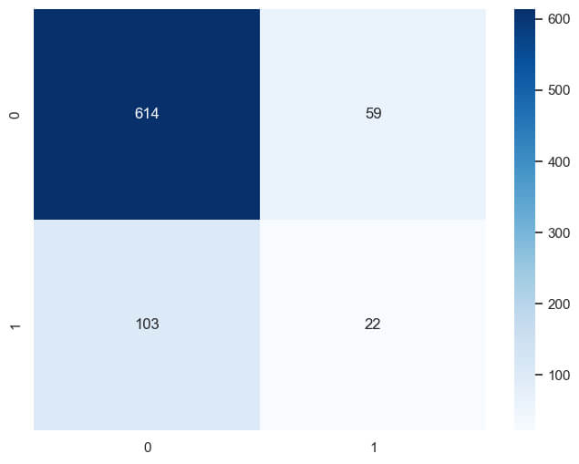
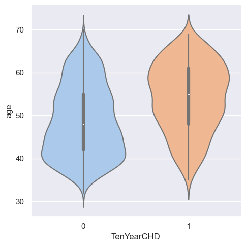
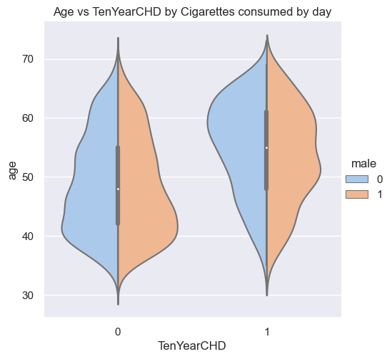
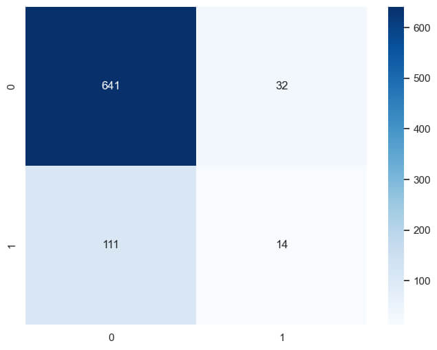
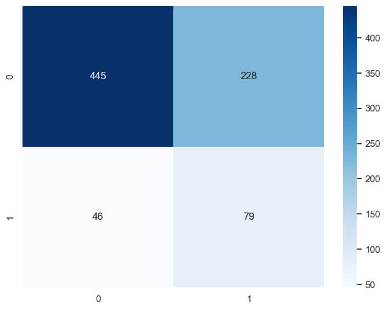
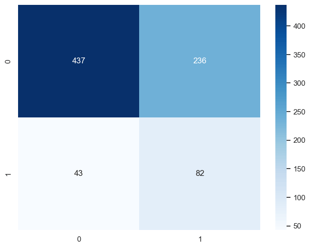
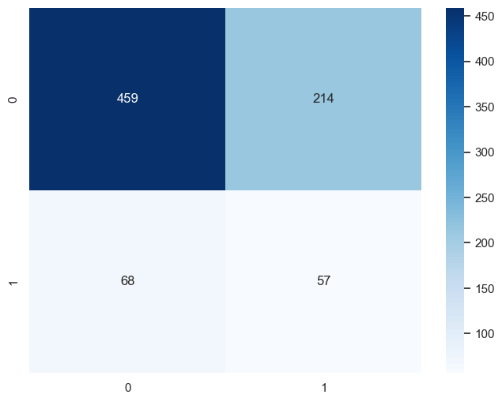

Gradient Boosting Classifier
Ten Year CHD Risk Calculator
Coronary Heart Disease (CHD) remains one of the leading causes of mortality worldwide, posing significant health and economic burdens. Early prediction and preventive strategies are crucial in mitigating risks and enhancing patient outcomes. Implementing an accurate CHD risk prediction tool empowers healthcare providers and individuals with actionable insights, fostering preventive care measures and reducing the incidence of heart-related morbidity and mortality. Traditional CHD risk calculators, while useful, often adopt a one-size-fits-all approach, overlooking the nuanced interplay of various risk factors. Advances in data science present an opportunity to refine these predictions, tailoring risk assessments to individual health profiles.
Objective: Develop a sophisticated Ten Year CHD Risk Calculator that leverages machine learning algorithms to accurately predict an individual's risk of developing CHD based on a comprehensive set of health factors, comparing various algorithms to identify the one that offers the best performance.
The project adopts a comparative analysis framework, evaluating several machine learning models to identify the most accurate predictor of ten-year CHD risk. Utilizing the Framingham Heart Study dataset, the project examines a rich array of health variables, including age, cholesterol levels, blood pressure, diabetes status, and smoking habits, among others. This dataset is instrumental due to its extensive follow-up period and detailed health assessments. Key challenges include handling missing data, balancing the dataset to account for uneven distribution of CHD cases, and ensuring the model's interpretability to healthcare professionals.
STEPS:
1. Data preprocessing: Cleaning and preparing the Framingham dataset for analysis.
2. Feature selection: Identifying the most predictive variables for CHD risk.
3. Model training and evaluation: Training various algorithms (e.g., logistic regression, random forests, SVM) and evaluating their performance through metrics such as accuracy, precision, recall, and AUC-ROC curves.
4. Model optimization: Fine-tuning the best-performing model to enhance its predictive accuracy.
Let's get deep into it. Remember you can find jupyter notebooks and archives in my GitHub!
About the dataset.
Exploratory Data Analysis
The dataset is publically available on the Kaggle website with the description: "The "Framingham" heart disease dataset includes over 4,240 records, 16 columns and 15 attributes. The goal of the dataset is to predict whether the patient has 10-year risk of future (CHD) coronary heart disease"
This dataset has several null values so the first step was to visualize the proportion of null values
Null values of Framingham Dataset
Null values volume of Framingham Dataset per variable. x-axis = dataset variables, y-axis = values
For simplicity, it was decided to drop the entries with null values from variables that exhibited 5% or fewer null values. In the case of "glucose" variable, KNN imputation was chosen due to the larger volume of data; discarding them would not have been prudent
As can be seen in the following graph, the distribution of the variables does not show significant changes after data cleaning and imputation. Additionally, it is observed that the continuous variables exhibit irregular and skewed distributions.
Variable's distribution before and after being cleaned of null values
Blue= before cleaning, Red=After cleaning.
Outliers were observed in several variables. In health sciences, there are situations where confining to a range is more beneficial, especially in the daily practice of healthcare professionals. Therefore, winsorization was employed to replace outliers with the extremes of the defined ranges at the 5th and 95th percentiles.
Let's analyse the variables, beginning with the target variable
Distribution of target variable
0 = Ausence of the event. 1 = Presence of the event
The target variable is evidently skewed, a common occurrence when studying diseases. In a future step, we will use SMOTE analysis to address this issue.
The following graph illustrates the correlation between the variables.
Correlation between variables
Blue = negative correlation. Red = positive correlation
From the heatmap analysis, several insightful observations can be made regarding the correlations among variables in the dataset:
1. Gender and Smoking Habits: There is a slight correlation between being male and currently being a smoker, as well as with the number of cigarettes smoked per day. This suggests a gender-specific pattern in smoking habits within the dataset.
2. Age and Smoking: Age shows an inverse correlation with being a smoker, indicating that older individuals in the dataset are less likely to smoke. This raises an interesting point for further investigation, particularly whether older individuals are less likely to be women, given the observed correlation patterns.
3. Age and CHD Risk Factors: Age is correlated with several variables that are known in medicine to be risk factors for Coronary Heart Disease (CHD), including the TenYearCHD outcome itself. This highlights the importance of age as a predictor in CHD risk models.
4. Education and Other Variables: Education shows very little correlation with other features. It appears that older individuals in the dataset have lower education levels, reflecting a characteristic of the population from which the data was sourced.
5. Smoking Variables: The variables representing current smoker status and the number of cigarettes smoked per day (CigsPerDay) are highly correlated. Given that CigsPerDay being greater than zero inherently indicates a current smoker, it could be argued that the Current Smoker variable might be redundant for the prediction model, as CigsPerDay offers a more granular insight into smoking habits and its potential impact on TenYearCHD risk.
6. Hypertension and Blood Pressure: Prevalent hypertension shows a significant correlation with both diastolic and systolic blood pressure, which in turn are closely correlated with each other. This underscores the interrelated nature of these cardiovascular risk factors.
7. Glucose and Diabetes: A slight correlation between glucose levels and diabetes suggests that individuals with diabetes in the dataset might be under medical treatment, leading to controlled glucose levels. This assumption points towards the managed state of diabetes in the study population, potentially affecting their CHD risk profile.
These observations provide a foundational understanding of the relationships between various health factors and their collective impact on CHD risk.
A noteworthy observation is that coronary heart disease (CHD) is directly related to age, and when comparing men and women, it is evident that the peak incidence of CHD occurs at an older age in men than in women.
Comparison of age of CHD onset between male and females

First graphic. Comparison of patients' age with (1) or without(0) CHD in Ten Years. Second graphic: comparison of incidence and age between women and men
Feature engineering
Systolic and diastolic blood pressures are highly correlated. This is explained by their physiological connection, and in fact, there is a quantitative measurement that represents both readings: the mean arterial pressure.
Considering this correlation and the fact that in our data the distributions of both variables were identical, it was decided to use this calculation to simplify the features with which future machine learning models would be trained. This approach aims to streamline the input variables, potentially enhancing model performance by focusing on a single, comprehensive measure of blood pressure rather than two highly correlated but separate measurements.
MAP = DP +1/3(SP-DP)
Handling imbalanced data is a critical step in preparing a dataset for machine learning models, especially in fields like healthcare, where the outcome variable can be heavily skewed towards one class.
In this case, the decision was made to perform oversampling on the minority class using the Synthetic Minority Over-sampling Technique (SMOTE). This method synthetically generates new instances of the minority class by interpolating between existing instances. SMOTE helps to balance the dataset by increasing the size of the minority class, thus providing a more balanced distribution of classes for training machine learning models. This approach is particularly useful in preventing model bias toward the majority class and improving the performance of the model on the minority class, which is crucial for applications like disease prediction where the minority class (e.g., patients with a disease) is of significant interest.
To compare their results, various machine learning algorithms were tested. The algorithms used included Gradient Boosting Classifier, Random Forest Classifier, Logistic Regression, Support Vector Machine (SVM) Classifier, and K-Nearest Neighbors (KNN). This diverse set of algorithms was chosen to cover a broad spectrum of machine learning approaches, from ensemble methods like Gradient Boosting and Random Forest, which build models on top of multiple weak learners to improve prediction accuracy, to simpler, more interpretable models like Logistic Regression, which is often used as a baseline for binary classification tasks.
Random Forest Classifier
Logistic Regression
Support Vector Machine Classifier
K K-Nearest Neighbors
In this project, the Support Vector Machine (SVM) classifier emerged as the best option, followed by Logistic Regression. This preference is attributed to achieving a higher recall. Despite a lower precision, recall is critically important in healthcare settings because the cost of failing to diagnose a sick patient (a false negative) is often considered more severe than mistakenly identifying a healthy patient as at risk (a false positive). However, precision cannot be overlooked, as low precision leads to unnecessary expenses for additional studies and treatments.
The prioritization of recall over precision in healthcare contexts reflects the emphasis on patient safety and the principle of "do no harm." Early detection of conditions, even at the expense of additional follow-up tests for some false positives, is generally preferred to missing a diagnosis that could lead to more serious health consequences.
Conclusion
In this project, through the application of various machine learning algorithms to predict the Ten Year Risk of Coronary Heart Disease (CHD), the Support Vector Machine (SVM) classifier was identified as the most suitable model, closely followed by Logistic Regression. The selection criteria were primarily based on the models' ability to achieve high recall rates, a critical factor in healthcare applications where the early and accurate identification of disease risk can significantly impact patient outcomes. Despite SVM's lower precision, which could potentially lead to higher follow-up costs due to false positives, its superior recall rate is deemed more valuable because it minimizes the risk of overlooking patients who might be at risk of CHD.
Use cases
1. Clinical Decision Support: The models developed in this project can be integrated into clinical decision support systems to assist healthcare providers in identifying patients at high risk of CHD. By leveraging patient data, these tools can offer personalized risk assessments, enabling earlier interventions and tailored treatment plans.
2. Public Health Screening Programs: Public health initiatives can utilize the predictive model to screen populations for CHD risk, particularly focusing on high-risk groups. This can facilitate targeted health education, lifestyle interventions, and monitoring strategies to prevent the onset of CHD.
3. Personal Health Applications: The algorithm can be adapted for use in personal health apps, allowing individuals to assess their risk of CHD based on their health data. This can empower people to take proactive steps towards managing their health, such as improving diet, increasing physical activity, and seeking medical advice when necessary.
4. Insurance Risk Assessment: Insurance companies can use the model to better understand the CHD risk profile of their clientele, aiding in the development of tailored insurance products and pricing strategies that reflect individual risk levels.
5. Research and Development: In the pharmaceutical and healthcare technology sectors, the insights gained from this project can inform the development of new treatments and interventions for CHD. By identifying key risk factors and their impact on CHD risk, researchers can focus their efforts on areas with the highest potential for improving patient outcomes.